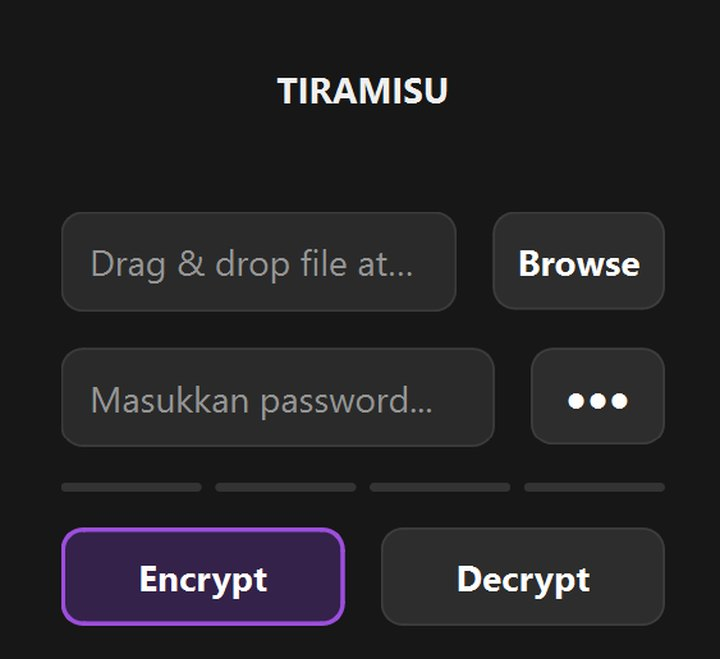

Tiramisu: File Encryption (PBL Semester 1)
Aplikasi enkripsi file pakai AES-256-GCM dengan kunci dari Argon2id. File diproses per potongan 384 KB, jadi file besar pun aman tanpa makan RAM. Skemanya envelope encryption: kunci file dibungkus lagi pakai kunci master. Ada juga versi server yang langsung upload hasil enkripsi lewat SFTP.
A file encryption app built on AES-256-GCM with Argon2id key derivation. Files are processed in 384 KB chunks, so big files stay safe without eating RAM. It uses envelope encryption: a per-file key wrapped by the master key. A server version uploads the encrypted output over SFTP.
